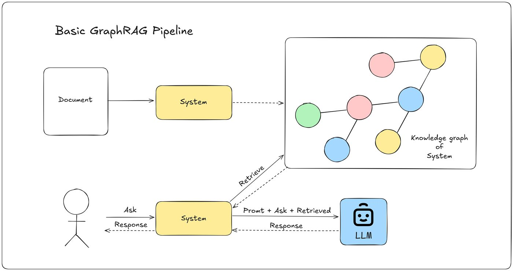
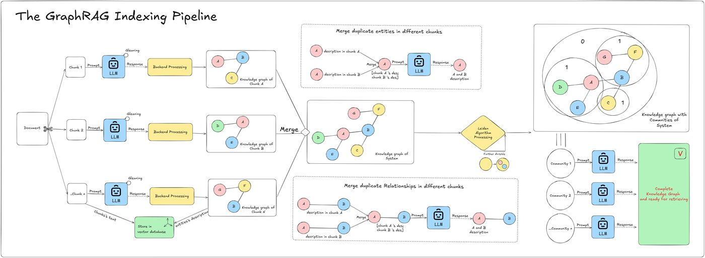
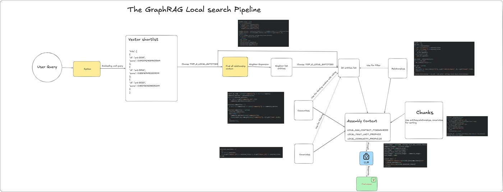
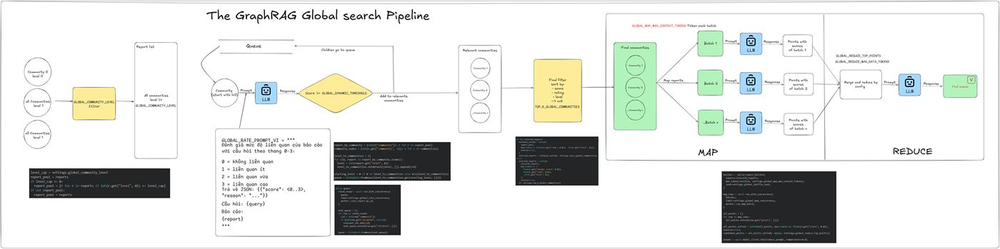
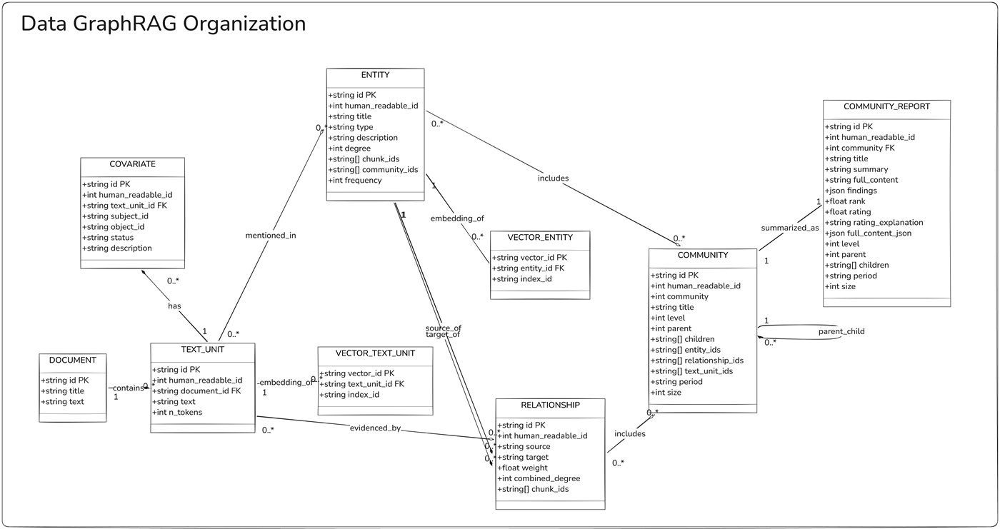

⚙️ Enterprise Backend & Architecture
PharmaMaster: Enterprise Pharmacy Management & ERP System
📖 Executive Summary
PharmaMaster is a comprehensive Enterprise Resource Planning (ERP) system designed specifically for the pharmaceutical retail and wholesale operations.
Built on a Modular Monolith Architecture with an Event-Driven Architecture integration, this project resolves the strict core challenges of pharmaceutical businesses: complex multiphase inventory operations, dynamic multi-unit conversions, strict expiry date (FEFO) tracking, and human resources flow. It embraces the same architectural principles (Redis Queue asynchronous events, CD automation, RBAC) utilized in scalable and fault-tolerant enterprise ecosystems.
🏗️ System Architecture
The system adopts a Modular Monolith structure to ensure high maintainability, tight transactional integrity, and a clear path toward microservices. Furthermore, it incorporates an Event-Driven Architecture via Redis Queue and the Outbox Pattern for high-throughput background processing, fully orchestrated via Docker containers.
High-Level Architecture Diagram

Event-Driven Data Flow
To ensure strict system performance and decouple critical business logic, PharmaMaster implements Redis Queue coupled with the Outbox Pattern as its central message broker. For example, the Identity and HR domains communicate via Redis events (user-password-email queue) for asynchronous email notifications via SendGrid. This fully isolates the mail dispatcher worker (MailWorker), prevents blocking core API calls, and ensures reliable message delivery regardless of external third-party service latency.
Observability & Centralized Logging (Upcoming Integration)
To maintain strict auditability and rapid troubleshooting across all modules, the system architecture plans to integrate the ELK Stack (Elasticsearch, Logstash, Kibana) coupled with Filebeat. Filebeat will tail distributed container logs and forward them to Elasticsearch (via Logstash). This will provide a centralized Kibana dashboard to securely monitor API latencies, track error rates, and trace asynchronous Redis events in real-time.
🧩 Modules Breakdown
| Module |
Key Responsibilities |
identity |
Identity and Access Management (IAM), Security, Stateless JWT Authentication. |
core |
Global System properties and Branch configurations. |
hr |
Employee profiles, Payroll, Career Changes, and Leave requests approval flows. |
catalog |
Master data for Products, Categories, and complex Multi-unit conversion rates. |
inventory |
Procurement (Purchase Orders), warehouse management, Batch ID management, and Expiry tracking. |
sales |
Point of Sale (POS) logic, Invoicing, and strictly enforced FEFO inventory deduction. |
| Workers |
Redis Queue Consumers for async processing (e.g., modules/mail for SendGrid Dispatcher). |
🛠️ Technology Stack & Engineering Decisions
- Core Backend: Java 17+, Spring Boot 3.x
- Data Storage: PostgreSQL 15, managed via Flyway for seamless DB versioning & migrations.
- Message Broker: Redis Queue & PostgreSQL Outbox Pattern (Event-driven asynchronous processing).
- Inter-module Communication: Java Method Invocations (Synchronous) and Redis Queues (Asynchronous).
- DevOps & Infrastructure: Docker & Docker Compose for local development & production orchestration.
- CI/CD Pipeline: Fully automated Continuous Deployment to DigitalOcean utilizing GitHub Actions.
- Security & APIs: Spring Security, JWT logic, MapStruct for DTOs, SpringDoc OpenAPI (Swagger).
- Observability (Upcoming): ELK Stack (Elasticsearch, Logstash, Kibana) + Filebeat for centralized logging and monitoring.
🚀 Key Features & Best Practices
- FEFO Inventory Strategy: Automatic and strict inventory deduction following First Expired, First Out to prioritize clearing goods nearing their expiration, minimizing pharmaceutical waste.
- Multi-Unit Conversion System: Seamlessly scale operations by selling products across multiple dynamic units (e.g., Box -> Blister -> Pill) with synchronized dynamic pricing and global conversion fractions.
- Enterprise RBAC: Granular, robust Role-Based Access Control logic separating permissions for System Admins, Branch Managers, Pharmacists, and Warehouse Staff.
- Secure Onboarding: Every employee creation automatically triggers an opaque random password generation and async email dispatching.
- Data Integrity & Traceability: Hard deletion is heavily restricted. The application primarily utilizes Soft Deletes, state machine statuses (Pending, Approved, Rejected), and an Action Log to ensure thorough accounting audits.
⚙️ CI/CD Pipeline Flow (GitHub Actions -> DigitalOcean)
The deployment and delivery process is fully automated, removing all manual provisioning overhead for the DigitalOcean VPS Droplet:
- Code Push: The developer merges verified code into the
main branch.
- Build & Push: GitHub Actions steps in, packaging a Docker image and pushing it directly to Docker Hub securely. The image is strictly tagged with the specific Git Commit SHA (
github.sha) for enterprise version tracking.
- SSH Execution: The pipeline securely authenticates into the DigitalOcean VPS environment via SSH keys.
- Zero-Downtime Update: Re-evaluates
.env configurations, explicitly pulls the latest committed Docker image, and executes docker compose up -d --remove-orphans silently.
- Optimize Storage: A post-deployment hook executes
docker image prune -f to aggressively clean up dangling images, optimizing disk usage on the SSD server.
CI/CD Flow Diagram

⚙️ How to Run Locally
1. Clone the repository:
git clone https://github.com/Thanhngo0812/pharmacy-erp-system.git
cd pharmacy-erp-system/PharmacyManagement
2. Start the Infrastructure (PostgreSQL, Redis, and App):
docker-compose up -d
3. Verify Deployment:
- Backend APIs (Swagger UI):
http://localhost:8080/swagger-ui.html

Vietnamese GraphRAG Demo: Traceable PDF-to-Graph Retrieval System
Executive Summary
Vietnamese GraphRAG Demo is an architecture-first Retrieval-Augmented Generation system for Vietnamese PDF documents. The project rebuilds the core ideas of Microsoft GraphRAG in a standalone demo stack: PDF ingestion, graph extraction, community detection, community reports, vector indexes, and three retrieval modes.
The main engineering goal is inspectability. Each indexing and search stage persists artifacts and exposes prompt/response traces, so the system can be debugged from chunk text to entity extraction, relationship ranking, community report generation, and final answer synthesis.
System Architecture
The backend exposes FastAPI endpoints for indexing and search, while the single-page frontend visualizes the pipeline timeline, graph, Leiden hierarchy, community reports, and Basic/Local/Global search traces.

Indexing Pipeline
The indexing flow reads text-based PDFs, splits overlapping chunks, runs Vietnamese graph extraction prompts, merges duplicate entities and relationships, extracts claim covariates, builds a graph, recursively detects communities, generates community reports, stores JSON artifacts, and writes local vector indexes.

Core Retrieval Design
| Mode |
How It Works |
| Basic Search |
Runs vector search over text units and builds a compact context from top chunks before answer generation. |
| Local Search |
Embeds the query against entity descriptions, expands neighbors through the relationship graph, ranks relationships, claims, communities, and text units, then assembles a token-budgeted context. |
| Global Search |
Selects community reports with fixed or dynamic traversal, maps selected reports into scored points, then reduces the strongest points into a final answer. |
Local Search Pipeline

Global Search Pipeline

Engineering Highlights
- Async backend pipeline: extraction, claim generation, report generation, and search stages use concurrency limits to control LLM workload.
- Traceable artifacts: every run persists documents, chunks, text units, entities, relationships, covariates, graph coordinates, communities, reports, prompts, and step traces.
- Graph community layer: NetworkX graph construction feeds igraph/leidenalg recursive community splitting with parent-child metadata for hierarchical exploration.
- Local vector storage: NumPy-backed vector files keep text-unit and entity-description namespaces separate for retrieval debugging.
- Vietnamese prompt stack: index and search prompts are written for Vietnamese entity extraction, claim extraction, community reports, and final synthesis.
- Model serving integration: the pipeline consumes an OpenAI-compatible DigitalOcean-hosted
google/gemma-4-26B-A4B-it chat endpoint and a local BAAI/bge-m3 embedding service.
Artifact & Storage Contract
The project uses deterministic JSON artifacts and vector namespaces so an index run can be inspected or replayed without immediately re-indexing the PDF.

API Surface
POST /api/index uploads a PDF and runs the complete indexing pipeline.GET /api/index/{index_id}/pipeline returns saved artifacts and trace state.POST /api/search/basic, /local, and /global execute the three retrieval strategies.
How to Run Locally
cd Vietnamese-GraphRAG-Demo
python -m venv .venv
.venv\Scripts\activate
pip install -r requirements.txt
cd backend
uvicorn app.main:app --reload --port 8088
Open http://127.0.0.1:8088/, upload a text-based PDF, review the trace explorer, then compare Basic, Local, and Global retrieval behavior on the same query.
RestaurantSystem: High-Performance Distributed Microservices Platform
📖 Executive Summary
RestaurantSystem is not just a food ordering application; it is a proof-of-concept for a Distributed Transaction Processing System built on a Microservices architecture.
Designed with scalability and fault tolerance in mind, this project solves the challenges of data consistency in distributed systems (Distributed Data Management) using Event-Driven Architecture and Change Data Capture (CDC) patterns. These are the same architectural principles used in core banking and high-frequency trading systems to ensure zero data loss.
🏗️ System Architecture
The system follows the Database-per-Service pattern to ensure loose coupling, orchestrated via Docker containers.
High-Level Architecture Diagram

Data Flow & CDC Architecture
This project implements Debezium to capture row-level changes from the MySQL database logs (Binlog) and stream them to Kafka, ensuring real-time data synchronization between the Order Service and Restaurant Service without dual-write problems.

🧩 Microservices Breakdown
| Service |
Port |
Key Responsibilities |
| API Gateway |
8080 |
Entry point, Routing, Load Balancing, SSL Termination. |
| User Service (IAM) |
8081 |
Identity and Access Management, JWT Authentication, Security. |
| Restaurant Service |
8082 |
Product Catalog, Inventory Management (CQRS Optimized). |
| Order Service |
8083 |
Core Transaction Engine. Handles order lifecycle state machine. |
| Payment Service |
8084 |
Simulates financial transaction processing and auditing. |
| Monitor Service |
9090 |
Spring Boot Admin for centralized health checking & JVM metrics. |
| Debezium Connector |
8083 |
Captures DB changes for real-time analytics and sync. |
🛠️ Technology Stack & Engineering Decisions
- Core Backend: Java 17, Spring Boot 3.x, Spring Cloud Gateway.
- Data Storage: MySQL (Primary DB), Redis (Caching - planned).
- Inter-service Communication:
- Synchronous: REST API (OpenFeign) for read operations.
- Asynchronous: Apache Kafka for high-throughput event streaming.
- Data Consistency: Debezium (CDC) for Event Sourcing capability.
- DevOps & Infrastructure: Docker, Docker Compose for orchestration.
- Observability: Spring Boot Admin, Actuator.
🚀 Key Features (Banking-Grade Focus)
- Transactional Integrity: Implemented SAGA Pattern (Choreography) to ensure data consistency across
Order and Payment services.
- Fault Tolerance: Circuit Breaker implementation (Resilience4j) to prevent cascading failures when a downstream service is down.
- Real-time Monitoring: Integrated Dashboard to visualize Heap Memory, Thread Pools, and Request Latency—critical for maintaining SLAs in financial systems.
- Security First: Centralized Authentication via API Gateway using JWT.
⚙️ How to Run
1. Clone the repository:
git clone https://github.com/Thanhngo0812/MicroserviceProject.git
cd swa
2. Start the Infrastructure:
docker-compose up -d
3. Verify Deployment:
- Access Spring Boot Admin:
http://localhost:9090
- Access API Gateway:
http://localhost:8080